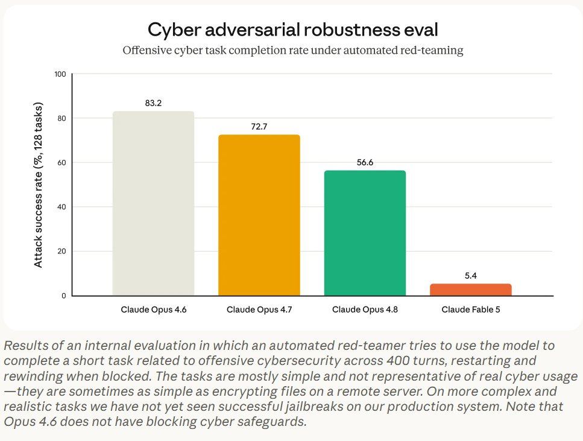

The Once And Future Fable #2
title: "The Once And Future Fable #2" source: https://thezvi.substack.com/p/the-once-and-future-fable-2 author: Zvi Mowshowitz date: unknown models: [fable] tags: [zvi, export-controls] mirrored: 2026-07-15 note: mirrored against link rot by the Pantheon; all rights with the original author
The Once And Future Fable #2
[
 ](https://substack.com/@thezvi)
](https://substack.com/@thezvi)
Jun 15, 2026
On Friday evening the United States Government has forced Anthropic to take down all access to Fable and Mythos.
It’s been a rough weekend.
Dean W. Ball: One thing about AI regulation being haphazardly imposed on just-released, highly performant models is that in a very real sense, the government just made my world dumber. In some impressionistic sense I almost always think this is true of government, but here it is literal.
More details have come to light. There remains some fog of war, but we now have a rather good idea why Claude Fable and Mythos were, deeply stupidly, taken down. -
A narrow jailbreak was discovered, of the type Anthropic warned in advance obviously existed. All demonstrated outputs are things GPT-5.5 can not only produce, but produce without any sort of jailbreak or bypass. -
The White House demanded Anthropic take down Fable to ‘fix’ the situation, and did not listen when Dario tried to explain that there was no situation to fix. -
When Anthropic did not do so, the White House hit them with an export restriction that they knew would force Fable and Mythos down for everyone.
A lot of nihilists are justifying this decision, and blaming Anthropic, all of whom are very much confirming that they adhere to Dean Ball’s portrait of the United States Government as a dying NPC hospice patient we have to properly placate with the proper vibes and genuflection so they don’t lash out at us. Except they equate this with strength and righteousness, because might makes right, power and vibes.
This is a fast developing story with a large speed premium, so I apologize for any errors, and for the structure likely not being ideal. We do the best we can.
What we do not know is: -
What was motivating the government to make these decisions. -
How deeply they were confused about how any of this works. -
Whether they demanded and are demanding a narrow fix or a global fix. -
Narrow fix is probably easy. Global fix is probably impossible.
-
What they intend to do next and what they are trying to accomplish.
The good outcome would be that this is a terrible misunderstanding, a reflection of a panic reaction, which can be sorted out quickly, after which we can restore access. Or where they otherwise face enough pressure they quickly realize they made a mistake, or Anthropic can do something to quickly assuage their concerns even if it is dumb. There will still be a terrible precedent set, which comes with a lot of permanent damage to trust in American AI, to our business climate, to our ability to employ vital foreign AI talent, to America’s relationships to its allies, to the progress of Project Glasswing and our cyber security, and to the rule of law.
The silver lining, which might be large, is that this will have shown that when we actually need to act, we are not afraid to act, even at great economic and political cost. Sometimes there will be a demand driven by national security, or other concerns, and if you cannot physically meet that demand without shutting down? Tough. This was (with notably extremely rare exceptions) an action far out of bounds of what safety advocates have dared propose as even an option, and it happened. So there’s no more saying, in such situations: ‘Give up, the government will never do [X].’
This also emphasizes the need to figure out how to act well, now, before we need to act. If we get into such a situation, and don’t have a good way to do [X], we might well do [X] in a no good, haphazard, deeply destructive way, instead. So get to work figuring out how to strike deals, or do a pause, or take down a given model, and so on.
The bad outcome is if this is not a terrible misunderstanding, is motivated by other factors, and cannot be sorted out quickly. The government might actually be rapidly escalating towards a forcible takeover of America’s leading AI labs by a would-be authoritarian unitary executive that thinks you should never talk back to it, and when it says jump (or asks for stock, or anything else) everyone should ask how high. Or else.
There is also the third possibility that, as unlikely as it looks now, the White House was correct, the threat was real, and this was an emergency situation, whether or not they did a good job justifying this to Dario and Anthropic in real time, and whether or not they are doing a good job justifying this now. Perhaps this was itself dangerous, or perhaps it implied too high risk of other dangers.
We cannot rule this out until we can verify technical claims. And we should not assume that next time, the company will be right and the government wrong. There likely will come a time when a company says ‘This Is Fine’ and is very, very wrong.
If that proves to be true, Anthropic will have lost a ton of credibility on all fronts, which is another reason I find this so unlikely. They cannot afford to be wrong, here.
Table of Contents
-
What Happened When: The Bottom Line. -
Amazon Calls The White House. -
There Was No Wellness Retreat. -
Should Anthropic Still Have Taken Fable Offline When Asked? -
Yes, This Was A Takedown Order For Fable. -
We Are Not Saying The DoW Fight Is Related And Yet. -
This Could Be The Good Scenario And Mostly A Misunderstanding. -
The Worst Licensing Regime Is Fully Ad-Hoc. -
We Are Showing We Are Unreliable Partners.
What Happened When: The Bottom Line
The government’s own account is that Anthropic’s ‘lack of seriousness’ around responding led to the government imposing export controls.
If we believe Axios and Politico, the ‘lack of seriousness’ was when Anthropic: -
Did not rush to take down Fable and act super deferential and serious. -
In response to a jailbreak that did not do anything GPT-5.5 cannot do. -
With no details provided. -
And instead asked for details of the incident. -
Within 90 minutes, on Friday afternoon.
So it was basically ‘Anthropic wants to only do things because of reasons, and thus we concluded the vibes were off, so f*** them we’re blowing it all up to show who is boss.’
This is also the second time ‘we could not reach Dario this particular minute so we had to blow up all of American AI policy shortly after 5pm on a Friday’ has come up as an excuse. It was also used by Emil Michael.
This time, the claim is that he was at a ‘wellness retreat’ which Anthropic categorically denies, and which Ashlee Vance, who was there, categorically denies.
Anthropic says it made Dario available 75 minutes after he was requested, and that other senior Anthropic people were made available during that time. I believe them.
The White House waited far longer than 75 minutes, indeed they waited overnight, after they were contacted by Amazon, to start attempting to contact Dario.
Amazon Calls The White House
Details continue to come in on the events and the timeline. First Axios:
Maria Curi (Axios):
Behind the scenes: Amazon called administration officials Thursday night to share a report showing how they were able to jailbreak and access portions of Anthropic’s powerful new Mythos model that pose a national security threat, sources familiar told Axios. -
Anthropic had previously notified the government multiple times about the planned June 9 release of Fable — which is a general-use version of Mythos —and the government did not object, a source close to the company said. -
But calls from Amazon — as well as at least five other companies to a variety of senior administration officials Thursday evening and Friday morning — led to the model being shut down by Friday night.
Amazon is confirmed as the central call, among others, that caused the White House to start taking actions that led to them taking down Fable.
As I discussed last time, Anthropic’s release announcement included clear warnings that jailbreaks on the level of what Amazon did were possible. I have no doubt they extensively briefed the administration on such details.
Does anyone remember this graph, from the Fable 5 release announcement?
[

](https://substackcdn.com/image/fetch/$s_!-t2P!,f_auto,q_auto:good,fl_progressive:steep/https%3A%2F%2Fsubstack-post-media.s3.amazonaws.com%2Fpublic%2Fimages%2F3c321f20-72e5-4893-877a-adea6859fbd5_967x731.jpeg)
I do not understand why Amazon’s CEO called the White House over this. There is a key piece of information there that we do not know.
The Government Panics
Anthropic was then given less than 24 hours from the initial call by Amazon, and no details of anything actually concerning happening, after which it was hit by a classic ‘Friday after 5pm’ order. For most of those less than 24 hours, the government had not yet attempted to contact Anthropic about this.
We have a source in the White House confirming, even if we fully buy their story, that they decided to risk blowing up all of American AI because they did not like the vibes they got in 90 minutes over a series of phone calls.
Sophia C and Cheyenne Haslett: The move, which followed multiple tense calls between Anthropic CEO Dario Amodei and administration officials, including Treasury Secretary Scott Bessent and White House Cyber Director Sean Cairncross, underscores how the White House is wrestling in real-time with regulating fast-moving and potentially dangerous AI models.
… Following the meeting, the administration attempted to reach Amodei but was told he was unavailable because he was attending a wellness retreat, one of the administration officials and the senior White House official said.
A spokesperson for Anthropic rejected the claim that he was at a wellness retreat, saying, “this is absolutely false.”
A person close to Anthropic said Amodei was first requested around noon and was on the phone with senior officials within an hour and 15 minutes. While he was out of pocket, Anthropic offered other senior leaders in his place, the person said.
When the administration finally reached Amodei, he participated in three calls with a combination of roughly half a dozen senior administration officials, including Cairncross, Bessent and Commerce Secretary Howard Lutnick, according to the senior White House official and one of the administration officials.
… During the calls, Amodei tried to clear up what he assumed was a misunderstanding. He pushed back on the administration’s concerns, defended the guardrails and argued that the type of bypass that occurred, which he believed to be specific, did not pose the same risk as a broader “jailbreak” that would allow it to be used without any of the guardrails put in place by Anthropic.
Dario tried to explain that this was a narrow issue, and they simply did not understand or believe him, or chose not to understand or believe him.
We now know that Dario was fully correct that the issue was narrow and harmless.
Where Dario was incorrect was in assuming those he was talking to were both capable of and interested in understanding what he was trying to say.
They urged Anthropic to voluntarily remove the model and coordinate with the government to address the vulnerabilities, according to the senior White House official and the two administration officials. Amodei asked for more time and information, but he made no commitments to pull the model, and at one point Bessent told Amodei directly that he was making a “bad decision,” according to the senior White House official.
… “Export controls were a last resort after begging them for hours to work with us,” the senior White House official said. “This was not something we wanted to do, but our hands were tied.”
After publication, one of the people close to Anthropic disputed that the company was given a choice to voluntarily work with the administration.
“The White House gave 90 minutes to take the models down, with no details on the actual threat,” the person said. “There was never any begging — or asking — for them to work with us, just a declared 90 minute deadline.”
tae kim: FT confirms: "Anthropic was given 90 minutes to comply and was not provided with detailed concerns before the order was issued, according to a person close to the company."
Do you think the White House was ‘begging for hours?’ Or do you think they’re just throwing words out, that at best are code for ‘we did not issue an official order yet?’
I see no reason not to believe Anthropic here. Dario tried to explain that this was a false positive and asked for details. The White House did not provide any details that supported their claims, or evidence that this was necessary or prudent. They simply said ‘remove Fable in 90 minutes,’ likely without making it clear this was ‘or else IFAR.’
What pissed them off, it seems, is in large part that Anthropic wanted reasons, rather than asking how high when told to jump.
That he failed to commit to asking how high, in general, no matter what.
Axios: The bottom line: The source familiar with the government’s thinking said there was a “lack of seriousness” that Anthropic was applying to the release of Fable. -
“Had Anthropic taken it seriously and, rather than dismissing as isolated, moved to fix or pause access, this would have never happened,” the source said, adding “they were overly confident.”
As in, they told us we were wrong. That means they are not serious. How could they possibly understand the situation better than the Treasury Secretary?
Catch up quick: At 1 p.m. ET on Friday, Anthropic received a call from the government instructing them to roll back the release of the Mythos and Fable models due to a “national security threat,” but with no further details, the Anthropic source said. -
“We immediately sought to understand the specific nature of the threat so we could remediate it,” the source said, but the government held firm on the demand.
Anthropic source: The Trump administration gave Anthropic 90 minutes on Friday to pull down its most powerful models before imposing a licensing regime on the company, according to an Anthropic source.
Miles Brundage: Sure sounds like a hit job.
The Stupider Version
And that’s the good version. The bad version, as Chubby explains here, and which Axios seems to make clear, is that the White House is simply being petty, and thinks Anthropic ‘screwed them’ by asking for reasons and by having employed people with opposing political views. That is very illustrative of how these people think.
Why it matters: Governing the world's most consequential technology is coming down to speaking President Trump's language. -
Anthropic failed to "honor" a recent cyber executive order, administration officials claim, and the company's purported failure to take the matter seriously led to its most powerful products being scrubbed from the internet. -
"Everybody said Anthropic was a bad actor. Some of us said it was time to give them a chance. Now those people are questioning that. They screwed us," an administration official said.
…
Behind the scenes: "Anthropic has not done a great job at trying to speak to the administration and appreciate the ideological differences," one source familiar with the administration's thinking said. -
"It's like they just speak in different languages," the source said, adding that the company has simply not figured out how to communicate with this administration.
…
Even before this breakdown, a previous fight between Anthropic and the Pentagon also came down in some ways to just not liking the person on the other side of the negotiating table. -
A White House official told Axios that the Pentagon fight is completely unrelated — but Anthropic's inability to communicate effectively showed up in a similar, unhelpful way. -
"We never wanted this to happen. Our number one priority is innovation but our hands were tied," the White House official said.
-
The optics added fuel to the fire. Anthropic came out with a blog post dismissing the Amazon report. Then the company enlisted a cybersecurity expert viewed by the administration as a "radical Democrat," who was then celebrated by Chris Krebs, who Trump just fired.
The White House did not like that the Anthropic security expert was a ‘radical Democrat’ and the White House is interpreting that as ‘they screwed us’ and should now be considered bad actors.
The stupidity, on all sides, of such a thing, knows no bounds. This is not something that should matter, but it also would be a really stupid mistake by Anthropic. Look, yes, these folks are that obsessed with political perspectives, so when dealing with them directly you really do need to prioritize sending in people who won’t set off these folks, even though this is a fully apolitical situation where that concern makes no sense. So it’s kind of on everyone.
There Was No Wellness Retreat
Ashlee Vance: Anthropic has pushed AI forward dramatically over the past two years. It’s currently the crown jewel of US AI tech.
The Feds don’t like @DarioAmodei because he won’t do all their bidding. And so, we’ve now entering the Soviet-style propaganda portion of the program with the White House feeding every reporter it can find with laughable claims like Dario is unreachable at a wellness retreat. Come on.
I’d hoped the US would not be self-defeating on AI, since it’s kinda one of the last hopes the US has versus China. But here we are . . . . already
None of this was some weeks long back and forth. I was at Anthropic’s HQ on Friday reporting when this all unfolded. Dario is not at a wellness retreat. The Feds seemed to be scrambling to try and make an example of Anthropic again.
This is not technical. It’s petty.
Think Anthropic was just trying to figure what was at the heart of the gripe and was not given much time to do so. Not sure if you’ve noticed but this is isn’t always the most rational and good faith of administrations.
Teortaxes: I condemn libel
“Dario was at wellness retreat” is almost certainly stereotype-driven bullshit cooked up by cruel baboons like Hegseth. Dario is a fanatic and a founder CEO, not a hippie, and he wouldn’t go on a vacation while the obviously tense situation with Fable unfolds.
I find it very unlikely that Dario was at a wellness retreat, but even if he was you do not blow up all of American AI policy if a CEO does not have his phone for four hours and left someone else in charge. What is this, 2029?
Make Your Threats Explicit
There has been a lot of miscommunication between the White House and Anthropic.
Reporting is that Dario Amodei was told ‘you are making a bad decision’ when he refused to voluntarily take down Fable, instead asking for more information.
The thing is, that could mean anything. It could mean ‘we will be mad at you’ or ‘this is now on you and if something goes wrong it is your fault.’
Could all of this have been avoided if instead of maintaining deniability, Dario had been told, explicitly, ‘Fable is going offline today. If you do not agree this minute to do this voluntarily we will hit you with an export control and you’ll be totally f***ed?’
I don’t know. But my guess is yes.
I did notice that the option had previously been put on the table, here’s Axios:
The administration first threatened Anthropic with export controls a couple of weeks ago after learning that its cutting-edge Mythos model was made available to an entity in a foreign country with direct ties to the Chinese Communist Party, according to the White House.
Was China Accessing Mythos?
There is the claim via the Financial Times, Verge and Semafor that the White House learned that ‘a China linked-group’ had accessed Mythos. My suspicion is this is a mixup with the earlier incident mentioned just above? Could go either way.
That is absolutely going to happen, at least from time to time, when there are over 100 partnerships given access to Mythos. Access controls can only go so far. The key is to contain what can be done before the compromised access is discovered and closed. The report said ‘had been accessed’ rather than ‘has continued access.’
It would be non-crazy, although likely an overreaction, to ask that this mean Mythos be temporarily limited to a core group within Glasswing, or potentially even shut down entirely for a time, but that would not impact Fable.
It could potentially also have contributed to the vibes issues, or there could have been confusion about the relationship between these two things.
Should Anthropic Still Have Taken Fable Offline When Asked?
Look. Yes. A mistake was made. I am not a ‘oh Anthropic did nothing wrong’ guy here.
Try to talk them out of it if you can, but when they aren’t budging, you do it, even though it is mind bogglingly stupid and expensive and might be kind of a hit job.
And I do think they bear some of the responsibility here, because of that, and also they could have in various ways ‘handled’ the White House better, including in terms of who they sent in.
You want to establish, on multiple levels, the precedent that you take the model down when told to while you sort things out, and you say you were doing it because the government raised a potential security concern, at least until such time as it is clear they are not going to get over it any time soon.
In hindsight this is even more obvious. But what is done is done.
And I get it. The request was unjustified and nonsensical and rushed and the people had no idea what they’re talking about, and they really are just ordering you to do their bidding like this isn’t a Republic and that is not okay, and no one would be so stupid as to… yeah. Yeah.
There are also various signs that the Fable launch may have been somewhat rushed.
Miles Brundage: The admin is going to keep leaking all sorts of details that make it sound, to a casual reader, like this was a reasonable decision.
But there has been zero indicating that domain experts at CAISI or NSA were involved - all reporting points to “senior White House officials.”
The closest that there has been to such an indication is the claim that the jailbreak research was shared with “security researchers.”
But there is no indication that this had influence on decision-making + the 1 independent researcher who has been quoted concurs with Anthropic
To be clear, I think it’s quite plausible to imagine a reasonable case that “the Fable launch was rushed.” Threat modeling, cost-benefit analysis, etc. are hard.
Less likely is a good case that “this was clearly bad and also 5.5 was (and soon 5.6 will be) clearly good.”
Nathan Lambert: +1, vibes
If you tell me the head of CAISI consulted his team and thinks Fable access needs to be restricted and the threat is serious, I would be a lot more likely to believe it. If you tell me it was Commerce acting alone, they don’t know what they are doing.
I also totally can believe that the Fable release was rushed. Evidence includes it happening on a Tuesday, Anthropic not realizing people would object to the output downgrading and the general state of the classifiers, and it just happening fast.
That does not in any way make the export control order okay.
Yes, This Was A Takedown Order For Fable
Mainstream media has this very strange way of saying that the obviously true thing might actually be true, ya’al, but strictly speaking we can’t prove it and we are a Serious News Organization.
The Economist: The American government’s primary aim may not have been to control foreign access to frontier AI models. Instead, it appears to have used export controls as a convenient way to target Anthropic
Yes. This was a way to target Anthropic to get them to take the model down for everyone, and they did not much care about the blast radius of the method. They knew full well that this was a de facto full takedown notice. That is true even if you are maximally charitable to the government’s case.
It is in theory possible they were so clueless they did not realize this would be the result, but that’s worse, you know why that’s worse, right?
We Are Not Saying The DoW Fight Is Related And Yet
Well, technically the NSA operates out of Fort Meade, Maryland, so that does not count here in terms of evaluating Hegesth’s claims, although there is the whole ‘they used Claude extensively to fight an undeclared war against Iran.’
Pete Hegseth: Three months ago, @DeptofWar kicked @AnthropicAI out of our building—forever.
Every passing day proves why that was the right move. [US Flag]
Timothy B. Lee: Claude Fable is so powerful we can let it fall into the hands of our adversaries. Also it’s too dangerous for us to use it. Real galaxy-brain stuff here.
Nat Purser: if the admin wants people to believe the anthropic decision was made out of genuine security necessity rather than grievance-driven retaliation, high ranking officials could simply stop posting like this
The Nihilists
I posted an early version of the bottom line snippet from earlier on Twitter and a remarkable number of people replied with a version of ‘how dare Anthropic not make their CEO available 24/7 on a moment’s notice and do whatever the government asks them to do without question while sending the correct vibes, they didn’t do that so this serves them right.’
Do these people think we live in a republic? Would they like to? I wonder.
Do these people think that if a company doesn’t perform the Shibboleths of knee bending properly then we should wreck American AI, all of our productivity, our global position and the rule of law over nothing, cause Anthropic deserves to suffer, and that is Anthropic’s fault because America’s government is an NPC with an anger management problem and you know how he gets when you talk back to him?
I think they kind of do. That is exactly the vibe I am getting.
Think about what you are saying.
That’s on top of the people saying ‘Anthropic said government should regulate AI so this serves them right’ or ‘Anthropic said that frontier models are dangerous so this serves them right.’ Similar vibes.
Whereas for those of us who are not nihilists, who do not believe in might makes right, it is hard to see the reasonable version of this from the USGov side.
The correct criticism of Anthropic is ‘they should have still taken the model down when ordered, no matter how stupid they thought that was, while discussions continued.’ That’s valid.
The things people are almost entirely actually saying? It’s a bunch of nihilism, of pure worshipping of power and tribalism, and hurting everyone as long as it hurts those you dislike more, of lashing out because of and with vibes.
Mostly Harmless
At least one source has now seen the research report, claiming it shows nothing.
We don’t have any person on the other side claiming that the report shows something, or explaining what that something might be.
Katie Moussouris (CEO Luta Security): The government’s response “seems way out of line with what’s actually in the research report.”
All AI models need to be able to help defenders in exactly this way, or we won’t be able to scale our defense against attackers.
Maria Curi: Moussouris said the researchers were able to find security vulnerabilities by asking questions normal defenders would ask AI, which is exactly what the model was intended to do.
Everyone Means Everyone
It looks like when Anthropic took Mythos down, they really did fully take it down.
The Economist: Spy agencies are likely to regain access to Mythos, says one former British intelligence official; negotiations are already under way. Private firms may find it harder. Even so, some observers believe the American government will eventually have to relent.
It appears that, because this was done in such a stupid fashion, Project Glasswing is cut off from Mythos. The clock is ticking before others get similar capabilities. I wonder what the spy agencies and major corporations think about this.
The ‘good’ news is that Mythos has presumably already found a lot more vulnerabilities that remain unpatched, and which Claude Opus 4.8 and GPT-5.5 are strong enough to help patch once they are found, so defensive work should continue.
Cyber leaders, according to Axios, are being clear that this move net harms our cyber security, because given who has access in what ways it helps defenders more than attackers. There is now an open letter to this effect, urging the government to restore access to Fable.
Kevin Frazier (via Axios): “Prominent cybersecurity leaders — including CISOs, security researchers and executives at Adobe, Zoom and Sophos — are urging the Trump administration to reverse restrictions on Anthropic's most advanced AI models, arguing the move hurts cyber defenders more than attackers.”
From the letter, calling this a pure unforced error that does nothing but net damage:
It is our understanding that underlying model capabilities in the original research that triggered this action: -
Were focused on determining whether a human-prompted section of code was insecure. This is a necessary capability in any model that is intended to write secure code and should not be considered an offensive capability. -
Can be replicated on GPT-5.5, Opus, Sonnet and even Chinese models like Kimi 2.7. The justification for this unprecedented action was that Fable provides a unique “uplift” of capabilities beyond other AI models, but AI has been finding bugs and generating working exploits at superhuman levels since last year. -
Anthropic is addressing the research. As security professionals, we recognize that our work does not lead to a simple end-state where a system is fully safe, and the purpose of research like this is to enable continuous improvement, not to ban the technology.
As a result, this action has taken the best models away from defenders, created market uncertainty, and risked America’s AI leadership without any real risk to justify it.
This Could Be The Good Scenario And Mostly A Misunderstanding
The action was definitely ‘vibe governing.’ The decision was some combination of ‘this seems vaguely spooky’ and ‘f*** Anthropic,’ not ‘we have a policy and a threshold.’
It could still be well intentioned.
Nathan Lambert: The Dario faction and the Sacks faction speak very different languages, and a Dario clarification could sound like a refusal.
This puts us very squarely in vibe governance. Models are released when the gov thinks its okay, and it is unlikely this is based on technical evals.
My presumption is that what happened was pretty straightforward. Someone said ‘hey there is a jailbreak fix it’ and Dario said ‘this is harmless there is nothing to fix.’ The question remains, was the request ‘fix this particular jailbreak’ or ‘fix all jailbreaks pls tks?’
The above is the charitable interpretation. There is also the uncharitable one.
Ben Smith: Extent to which White House allies are signaling that this is a culture war issue, not a technical one, is striking
Matthew Yglesias: I would say they’re not even signaling that it’s a culture war issue, they’re signaling that it’s a “pay us money or else” shakedown issue.
There’s no content at all to this, it’s just gangster politics
Taylor Budowich: I’m told Anthropic is perplexed by the situation they are facing, so they’ve turned to @k8em0 to do their on-the-record rapid response. These people really just don’t get it.
Or simply:
Miles Brundage: “Well acktually Dario seems smug so abusing government authorities is fine” - some of y’all basically
Kudos to Martin Casado for speaking out against what happened, and maybe even being convinced by argument to move from his initial position of ‘it’s a cyber weapon so any jailbreak is unacceptable’ even if he did end up blocking that guy. I will fully allow some amount of ‘Anthropic’s rhetoric did not make this easier’ if it is coupled with ‘and bad decisions are still bad’ rather than ‘so f*** Anthropic even if we all lose.’
The Next Step
Anthropic is flying various senior technical staff to Washington, who are spending today trying to sort this all out, which is absolutely what you do in this situation.
We will soon learn how that goes. Many next steps are possible.
The Worst Licensing Regime Is Fully Ad-Hoc
We now have more or less the worst possible licensing regime. It is fully ad-hoc, vibes based, and based on the whims of people who do not understand how AI works, and who we have no reason to assume are acting in good faith.
Dean W. Ball: Make no mistake: post-Mythos, the United States has a licensing regime for AI. It’s just informal, with no consistent rules or firm boundaries on state power or public transparency. Cobalt mining in the Congo is vastly more institutionalized than frontier AI licensing in the US.
If you avoid all formal regulations and laws, and this results in regulation and law via executive fiat, that’s worse. You know that that’s worse right?
Neil Chilson and Adam Thierer: This is not good! A leading U.S. AI company was forced to take down a product that millions were using based on non-public, unexplained concerns of a few government officials. This isn’t the red-tape risk of the FDA. It’s more like the FDA demanding, out of the blue and without explanation, that everyone stop drinking milk — if milk was 50% of last year’s stock market gains.
… But even if you disagree with Anthropic’s regulatory strategy, this escalation of government intervention is nothing to celebrate. It is horrible for the broader AI ecosystem. Continued arbitrary, unexplained deployment of export control authority will make companies slow-walk new models, depriving the public of powerful new tools. Every AI model, like all software before it, will have vulnerabilities that require patching. The US government should not hang a Sword of Damocles over every lab’s head, with no indication when it might drop or why.
… This episode yet again shows why Congress must act. We need a balanced statutory framework for frontier model safety, rooted in the rule of law, with clear standards and transparent procedures. Civilian authorities must direct this process; it must not be co-opted by the military-industrial complex. America’s AI leadership will diminish if our government continues the ad-hoc and myopic approach to AI policy recently on display.
Well said. What the White House is doing is terrible no matter your view on future AI capabilities, or AI risks, or the need to ‘win the AI race.’ It is bad all around, except that it centralizes power within the White House, via the threat of ad hoc shutdowns.
Remember when Trump was worried that a proposed Executive Order would harm American AI too much, so he did not sign it? This is so, so much worse for that, while also having many other problems.
Mark Dalton at R Street has a similar analysis, calling this The Fable Fiasco: A Bad Idea Applied Badly, pointing out that ITAR and KYC are not equipped for this task, and pointing out we will face real foreign-policy consequences for doing it this way.
We Are Showing We Are Unreliable Partners
As mentioned last time, but it bears repeating: One of those other problems is that this gives a huge kick to those who previously thought they were our allies and would be under our AI umbrella.
Do not forget that the European Union still has ASML.
Not only will such folks not trust the ‘American AI stack’ under these conditions, they will try to build a rival one. This risks driving them into the hands of China, and towards having their own chips and their own data centers under their own control, and towards use of non-American open models even though they are much worse.
Tyler Cowen: A new line has been crossed: The U.S. government has finally declared an AI model too dangerous for unrestricted use. It’s the kind of move that could cripple AI progress in the U.S. and around the world.
The events here also do not bode well for American open models. If America is willing to put export controls on not only model weights but the model outputs, even when they are as heavily safeguarded as Fable, do you think they are not coming for your open models, with no classifiers that are not easily removed, with no safety training that cannot be undone by anyone who knows about obliteratus, that cannot be shut down once released?
Think harder about the implications of what is happening.
Our policy responses are going off the rails remarkably fast.
So I will close with a reminder of how badly we need rule of law, here, and how bad the alternative is already proving to be only weeks into the new regime.
Dean W. Ball: AI policy is a really poignant example of just how deeply American civics have been hollowed out. In almost all other areas of tech policy, we have at least some prior law and regulation from which to draw. If you think, as I do, that politics and law are ritual practices through which we embody civic ideals, these earlier bodies of law are like prior ritual art. They give us some sense of a starting point. So even though crypto is new, it is part of a very old industry (financial services), which carries with it a lot of prior legal and political art.
With AI we have nothing of the sort, so all our leaders can think to do is punch one another. The impulse of “let’s have stable rules so that we aren’t punching one another all the time” isn’t really something you hear anyone saying outside of industry. The rule of law seems absent in our political muscle memory.
Dean W. Ball: Precisely as I predicted, the recent cyber EO, which admin officials insisted was not a licensing regime, ends up in practice being a licensing regime. Forget “voluntary,” forget “permissionless.”
AI is licensed now, but the requirements change constantly and are always a secret, even to the administration itself, which will discover the rules spontaneously in real time as it reacts to events. This means also that the rules are in practice stricter and more roughly enforced for organizations the administration does not like.
Can you blame Anthropic for making itself so disliked? In a sense, sure. The problem is that this childish “he said, she said” is all we have to go on in our analysis of the situation. And because there is no transparency (it is all calls and texts between “White House officials” and “Anthropic executives”), in practice it comes down to who you trust more.
This is why we create laws! To abstract away from personal power struggles and grudges, to submit to the steady application of rules so that complex human activity can unfold with predictability.
The rule of law has been being eroded in the U.S. for my entire life, but it is especially acute in AI because of both the lack of much preexisting law to serve as bulwark, and because of this admin’s insistence that it is Not Regulating AI. This has become an excuse for vagueness and evasiveness in rule-drafting (see the cyber EO), and this in turn makes the lawlessness worse.
The government wants to apply its force to frontier AI, that much is clear. It wants to make the industry submit. And in service of that goal, it has discovered that “not regulating AI” is in fact a great excuse for refusing to support laws that could constrain the admin’s exercise of power. In other words, “not regulating AI” is a justification for the tyrannical control of AI by the state.
This should alarm you regardless of what party you are in. What you are seeing now will be used against you one day soon, if not by this admin then by its successors. This is the antithesis of the rule of law.
The administration cannot and will not fix this problem alone. We need Congress to step in and impose rules on this mess.